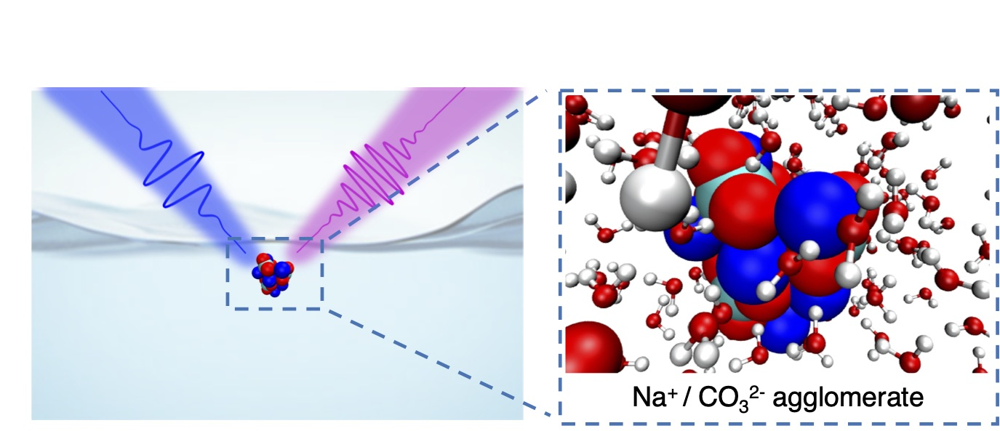
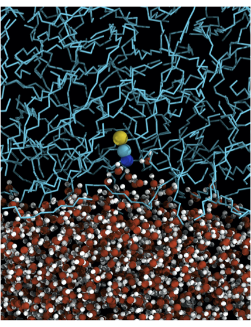
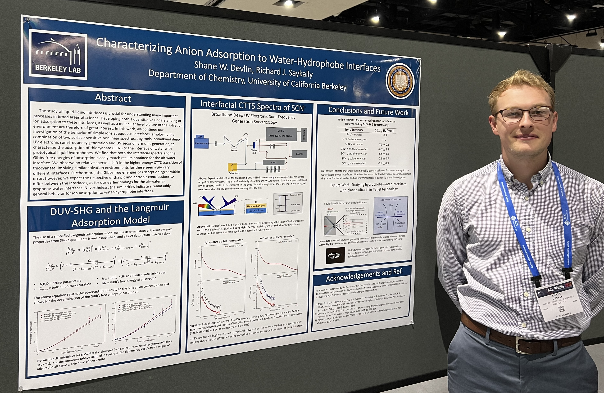
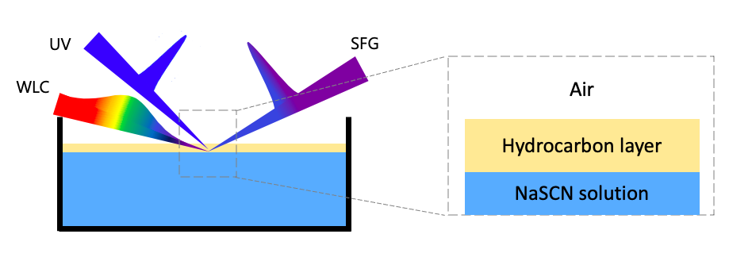

Research Blog
Current Work
Currently, I am interested in pushing the frontiers of Soft X-ray spectroscopy tools for the study of interfaces. As an Advanced Light Source Postdoctoral Fellow, I am working in the group of Moni Blum at the Lawrence Berkeley National Lab to develop the use of planar liquid sheets with X-ray Photoelectron Spectroscopy. This technique can selectively probe specific elements at various depths from the interface and is a powerful tool for understanding the spatial profile and number densities of various species in solution.
Additionally, I am working with Craig Schwartz (UNLV) and Walter Drisdell (LBNL) to develop Soft X-ray Second Harmonic Generation Spectroscopy. This technique combines the element specificity of X-ray Spectroscopy with the surface-sensitivity of nonlinear optics. We travel to X-ray Free Electron Lasers, which are unique accelerator facilities that produce extremely bright and coherent X-rays to conduct experiments on liquids and clean energy materials, such as perovskite solar cells and Si-based solar cells.
PhD work
My PhD was aimed at developing a deep understanding of the behavior of ions and water at aqueous interfaces. This work is motivated by the recent discovery that certain ions have enhanced concentrations in the interfacial region, relative to their bulk concentration, as well as from the importance that surfaces play in driving much of the chemistry we observe in the natural world (at the ocean surface, reactions inside aerosol droplets, biological membranes, etc.) Our goal is to develop a mechanistic understanding of what drives ions to aqueous interfaces. Is this driving force general? Is it ion specific? Interface specific? To answer these questions, we measure thermodynamic properties for different ions to different types of interfaces.
In order to properly study interfaces we require special tools: second-order nonlinear spectroscopy, which is a surface-selective spectroscopy. Our group has developed multiple techniques for this:
- Resonantly enhanced deep-UV Second Harmonic Generation spectroscopy: with this experiment, we are able to measure the thermodynamics of ion adsorption
- Broadband deep-UV Electronic Sum-Frequency Generation spectroscopy: with this experiment, we are able to capturing an entire broadband spectrum in the UV with a single laser pulse, which reports information on the solvation environment of the ion at the interface.
These two techniques, combined with simulations, allowed us to develop a detailed picture of ion adsorption.
Below, you will find blog-style postings for events related to my research, such as published papers, conferences I have attended, etc. Enjoy - and please reach out to me if you have any questions or would like to discuss any of my work!
(8) Paper: Water at Interfaces
For the Faraday Discussion, our group contributed a review paper on “Water at Interfaces”. For this paper, we focus on the four chosen subtopics for the meeting: dynamics and nano-rheology of interfacial water, electrified/charged aqueous interfaces, ice interfaces, and soft matter/water interfaces. The emphasis is on current advances in both theory and experiment, as well as important practical manifestations and areas of unresolved controversy.
(7) Conference: Farday Discussion - “Water at Interfaces” London, England
In September 2023 I attended the Faraday Discussion focused on “Water at Interfaces”, which was held in London by the Royal Society of Chemistry. I presented a poster on studying ion adsorption to liquid-liquid interfaces, using novel planar liquid sheets. Overall, it was a stimulating conferences, and it was great to meet and talk science with so many people working in the same field as myself.
(6) Paper: Agglomeration Drives the Reversed Fractionation of Carbonate and Bicarbonate at the Air-water Interface

In this paper, we measure the surface affinity of the carbonate and bicarbonate anions to the air-water interface, a vitally important system in atmospheric aerosol and ocean-surface chemistry. We find that doubly-charged carbonate exhibits stronger attraction to the surface than does singly-charged bicarbonate, contradicting long-standing classical electrostatic theory and current predictions from ion adsorption models. Through MD simulations, we found that strong ion pairing, resulting in the formation on large, near-neutral clusters of sodium cations and carbonate anions, is responsible for this behavior. These agglomerates show much stronger surface affinity over the bicarbonate anions, which do not cluster in aqueous solutions. These findings will have influence our understanding of carbon dioxide dissolution in the ocean, as well as how pH in small aerosol droplets might influence reaction kinetics and pathways.
(5) Paper: On The Mechanism of Ion Adsorption to Aqueous Interfaces: Air-water vs Oil-water

In this paper, we expand upon our previous work by studying adsorption to a new nonpolar, liquid-liquid interface. Additionally, we collaborated with Professor Ilan Benjamin from UC Santa Cruz who employed MD simulations to help unravel the individual contributions to the Gibb’s free energy of adsorption.
Abstract: The adsorption of ions to water-hydrophobe interfaces influences a wide range of phenomena, including chemical reaction rates, ion transport across biological membranes, electrochemical and many catalytic processes; hence, developing a detailed understanding of the behavior of ions at water-hydrophobe interfaces is of central interest. Here, we characterize the adsorption of the chaotropic thiocyanate anion (SCN-) to two prototypical liquid hydrophobic surfaces, water-toluene and water-decane, by surface-sensitive nonlinear spectroscopy, and compare the results against our previous studies of SCN- adsorption to the air-water interface. For these systems, we observe no spectral shift in the charge transfer to solvent spectrum of SCN-, and the Gibb’s free energies of adsorption for these three different interfaces all agree within error. We employ MD simulations to develop a molecular-level understanding of the adsorption mechanism and find that the adsorption for SCN- to both water-toluene and water-decane interfaces is driven by an increase in entropy, with very little enthalpic contribution. This is a qualitatively different mechanism than reported for SCN- adsorption to the air-water and graphene-water interfaces, wherein a favorable enthalpy change was the main driving force, against an unfavorable entropy change.
(4) Conference: Ultrafast Xray Summer School (UXSS)
Pulse Institute; Stanford Linear Accelerator (SLAC), Menlo Park, CA - June 2022
The UXSS is a four day conference hosted annually by Stanford University’s PULSE Institute.
The goal is to disseminate information and train students and post-docs on new opportunities in ultrafast science, particularly using X-ray Free Electron Lasers. Lectures were presented by expert scientists in this exciting new field.
I had a great time attending lectures, meeting students from different XFEL facilities around the world, and working on collaborative data analysis projects!
(3) Awards: Department of Chemistry Teaching Awards
UC Berkeley - April 2022
This month I received two teaching awards!
Chemistry Instructional Achievement Award: This is awarded by the department of chemistry to graduate students who have had a significant impact on student success and/or curriculum development. Awardees were selected by evaluation over their entire instructional career (for me, three semesters of teaching) and were based on faculty nominations and student feedback.
Outstanding Graduate Student Instructor (GSI) Teaching Award: This is awarded by the Graduate Student Teaching and Resource Center and is given to GSI’s with exceptional achievements in teaching.
(2) Conference: American Chemical Society Meeting
San Diego, CA - March 2022
In March of 2022, I attended the American Chemical Society meeting in San Diego, CA with two of my labmates. Apart from enjoying the SoCal sunshine, I had stimulating discussions with graduates students and professors from around the country, attended talks from many leaders in the field of surface science, and presented a poster on my research at the physical chemistry poster session.

(1) Paper: Characterizing Anion Adsorption to Aqueous Interfaces: Toluene-water vs Air-water
Journal of Physical Chemistry Letters - December 2021

Abstract: In this work, we continue our investigation of the behavior of simple ions at aqueous interfaces, employing the combination of two surface-sensitive nonlinear spectroscopy tools, broadband deep UV electronic sum-frequency generation and UV second harmonic generation, to characterize the adsorption of thiocyanate to the interface of water with toluene─a prototypical hydrophobe. We find that both the interfacial spectrum and the Gibbs free energy of adsorption closely match results previously reported for the air–water interface. We observe no relative spectral shift in the higher-energy CTTS transition of thiocyanate, implying similar solvation environments for the two interfaces. Similarly, the Gibbs free energies of adsorption agree within error; however, we expect the respective enthalpic and entropic contributions to differ between the two interfaces, similar to our earlier findings for the air–water versus graphene–water interfaces. Further experiments and theoretical modeling are necessary to quantify the mechanistic differences.